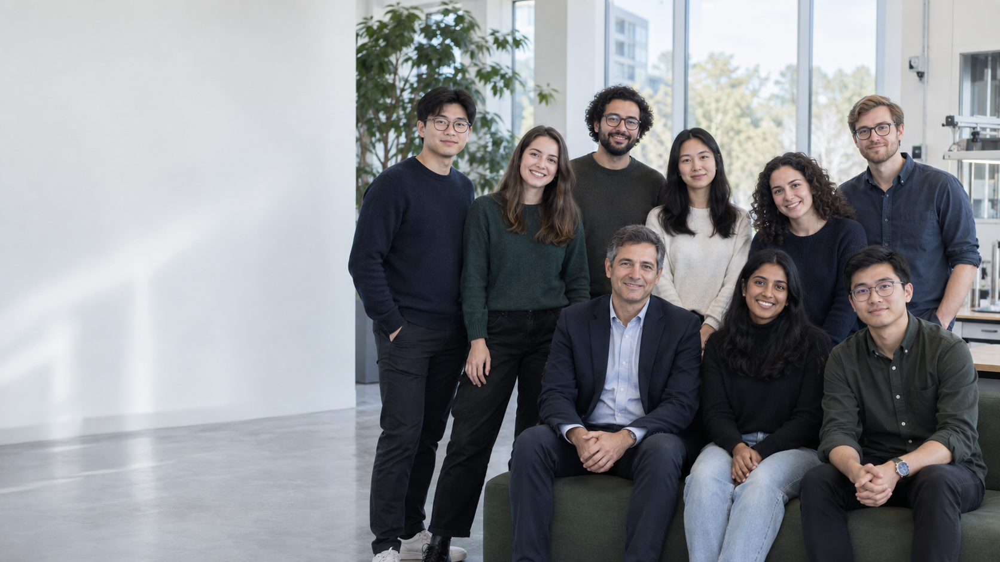

Foundation Models
Learning capable and efficient representations from large-scale multimodal data.
SCHOOL OF COMPUTING · EXAMPLE UNIVERSITY
Intelligent systems, designed to understand and work with people.
We are a research group working at the intersection of artificial intelligence, machine learning, and human-centered computing. Our work combines rigorous foundations with practical systems that are useful, dependable, and responsible.
Explore our research ↓
01 / ABOUT
Our goal is to build systems that can reason, learn from the world, and collaborate naturally with humans. We value clear thinking, open research, and a supportive lab culture.
Horizon AI Lab is based in the School of Computing at Example University. We welcome collaborators from computer science, design, cognitive science, and related fields.
02 / RESEARCH
Six connected ways we study and build intelligent systems.
Learning capable and efficient representations from large-scale multimodal data.
Making AI systems more reliable, interpretable, safe, and accountable.
Developing agents that plan, use tools, and operate over long-horizon tasks.
Connecting perception, action, and physical environments for adaptive robots.
Designing systems that augment human expertise, creativity, and decision-making.
Using machine learning to accelerate discovery in complex scientific domains.
03 / PUBLICATION NEWS
Selected paper announcements and lab updates.
PAPER ACCEPTED
PAPER ACCEPTED
AWARD
NEW MEMBER
04 / PEOPLE
Curious researchers building the next generation of intelligent technology.
FACULTY
PHD STUDENTS
MASTER'S STUDENTS
ALUMNI
05 / CONTACT
We are always glad to hear from prospective students, collaborators, and friends of the lab.
horizon-ai@example.edu ↗VISIT US
Horizon AI Lab
School of Computing, Example University
123 University Avenue, City 000000
Country